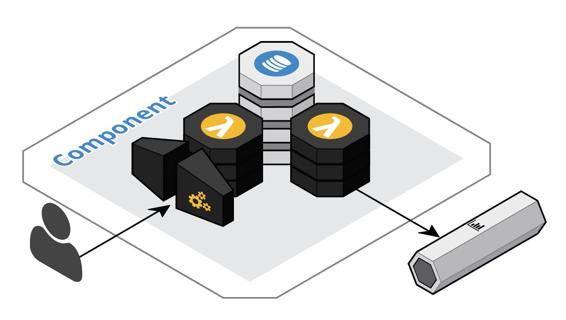

Conventions used
There are a number of text conventions used throughout this book.
CodeInText: Indicates code words in text, database table names, folder names, filenames, file extensions, pathnames, dummy URLs, user input, and Twitter handles. Here is an example: "Notice that the ItemChangeEvent format includes both the old and new image of the data."
A block of code is set as follows:
const raiseTestError = () => {
if (Math.floor((Math.random() * 5) + 1) === 3) {
throw new Error('Test Error'); // unhandled
}
}
Bold: Indicates a new term, an important word, or words that you see onscreen.
There is a concise diagramming convention used throughout this book. Cloud-native components have many moving parts, which can clutter diagrams with a lot of arrows connecting the various parts. The following sample diagram demonstrates how we minimize the number of arrows by placing related parts adjacent to each other so that they appear to touch. The nearest arrow implies the flow of execution or data. In the sample diagram, the arrow on the left indicates that the flow moves through the API gateway to a function and into the database, while the arrow on the right indicates the flow of data out of the database stream to a function and into the event stream. These diagrams are creating using Cloudcraft (https://cloudcraft.co).

Warnings or important notes appear like this.
Tips and tricks appear like this.